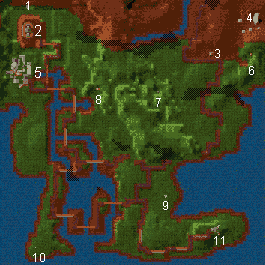

| 1. | Dragon's Lair [Map] |
| 2. | Castle Darkmoor |
| 3. | Tavern: The Rusted Shield, fills for 10 days |
| 4. | Circus Location |
| 5. | Darkmoor [City Map] |
| 6. | Snergle's Iron Mines [Map] |
| 7. | Obelisk #9 |
| 8. | Shrine of Speed pray here in the month of June |
| 9. | Fountain of endurance |
| 10. | Pedestal |
| 10. | Temple of Baa, healing and donations |
Leave us a message at: mgrounds@hotmail.com